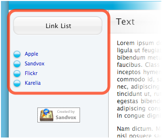

List of Links
A List of Links is a page or pagelet that holds a list of hyperlinks to external webpages. You can use this feature to display other sites of yours, to collect sites relevant to the topic of your site, or just to show visitors some of your personal favorites.
A typical List of Links looks something like this:

Ways to add a List of Links to a site:
Editing
To edit a List of Links page:
- Click the List of Links page in the Site Outline to select it.
- Open the Page Inspector. The top half contains general page attributes; the bottom holds settings specific to the List of Links as shown below.
To edit a List of Links pagelet:
- Select the List of Links by clicking it.
- Open the Selection Inspector. The top half contains general pagelet attributes; the bottom holds settings specific to the List of Links as shown below.
Change the Order of Links
You can change the order of items in the link list by clicking and dragging them in the Inspector.
Add a Link
To add a link, click the plus button in the Inspector. If you have Safari set in your Preferences, the new link will automatically be the web page in the foremost open window of Safari. (If this isn't the page you want to link to, just type over the text or cut and paste the correct URL).
Remove a Link
To remove a link, select it in the table and click the minus button.
Edit Link Information
To edit a link, select it in the table and use the boxes below the table to enter the title and URL of the link.
Comment
Text you type in the comment box will appear under the link in the List of Links. You can use comments to help your visitors know what to expect if they follow a link.
You can also insert additional text by clicking the Editing Marker ( ).
).
Options
Click on the "Options" tab in order to choose whether to open links in a new window and whether or not to bullet the items in the List of Links.